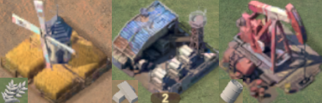
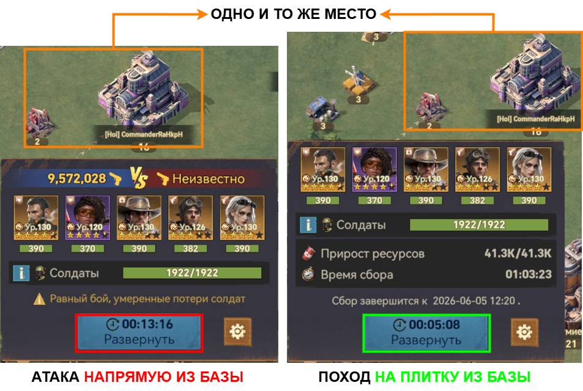
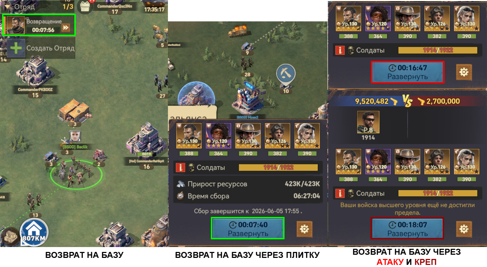
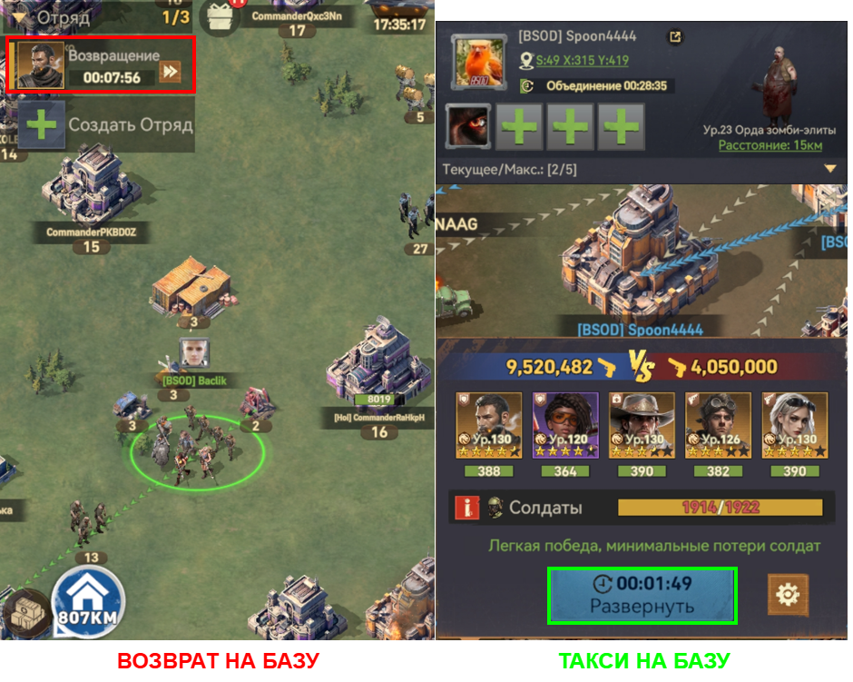

← Вернуться на главную
🏃 Движение отряда и Такси
⏱️ Скорость передвижения
🐢 Медленно — на креп дружественных баз, раскопку, атаку простых зомби, атаку баз игроков или строений эвентов.
⚡ Стандартно — при возврате на базу, на ресурсную плитку.
🚀 Быстро — с помощью сборов на элитную орду зомби («Такси»). Подробнее ниже.
🌾 Ресурсные плитки — твой главный транспорт
Ресурсные плитки — нейтральные строения для добычи ресурсов. Они разбросаны по всей карте. Их внешний вид — см. картинку.

💡 Советы по использованию плиток:
- Не обязательно доходить до плитки и занимать её — можно сменить цель в любой момент.
- Не обязательно искать плитку прямо у цели: расстояние в один экран от цели — допустимо.
- Если плитки рядом нет — мысленно продли линию от своей базы к цели. Продолжи эту линию от цели и дальше, и на продолжении можно выбрать ЛЮБУЮ плитку, а по пути сменить цель, проходя мимо.
📊 Сравнение методов перемещения
Общее сравнение основных способов — на картинке.


🚕 Такси (сбор на элитного зомби)
✨ Главное преимущество: можно оказаться в ЛЮБОЙ точке карты (или вернуться домой) примерно за 2 минуты.
Такси бывает двух видов:
- 🏠 Такси домой — игрок на месте базирования альянса создаёт сбор на элитного зомби. Желающие заходят в сбор и через ~2 минуты прибывают к нему на базу.
💎 Про-уровень: за пару секунд до захода в базу выйди из сбора и иди пешком — освободи место для следующего.
- 🎯 Такси куда-либо — игрок создаёт сбор на элитного зомби рядом с целью атаки. Все желающие присоединяются к сбору, прибегают к зомби, убивают его и далее могут свободно перемещаться.
📈 Демонстрация такси
По сравнению с обычным возвратом на базу.

🏠 На главную